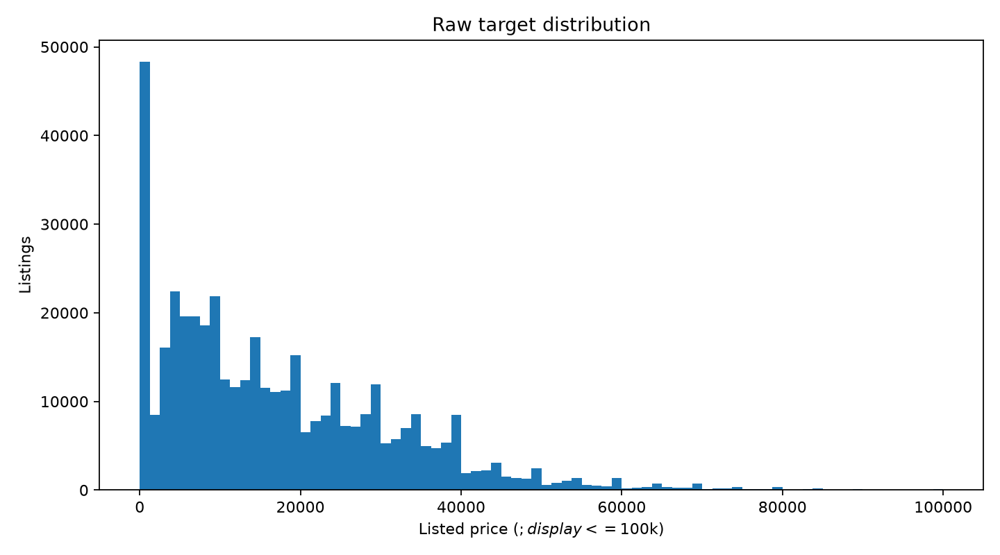
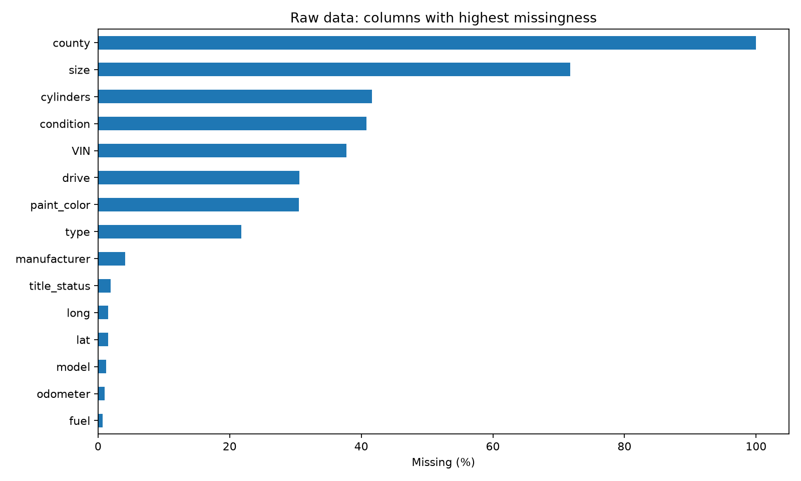
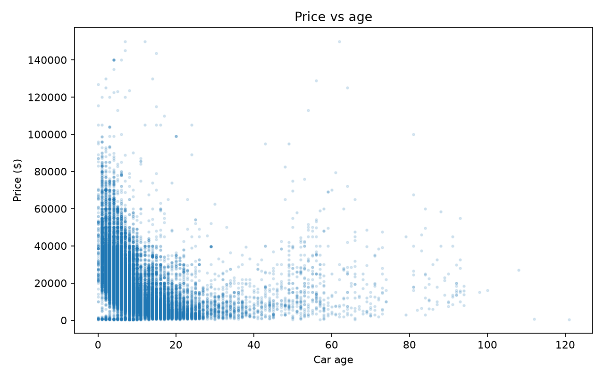
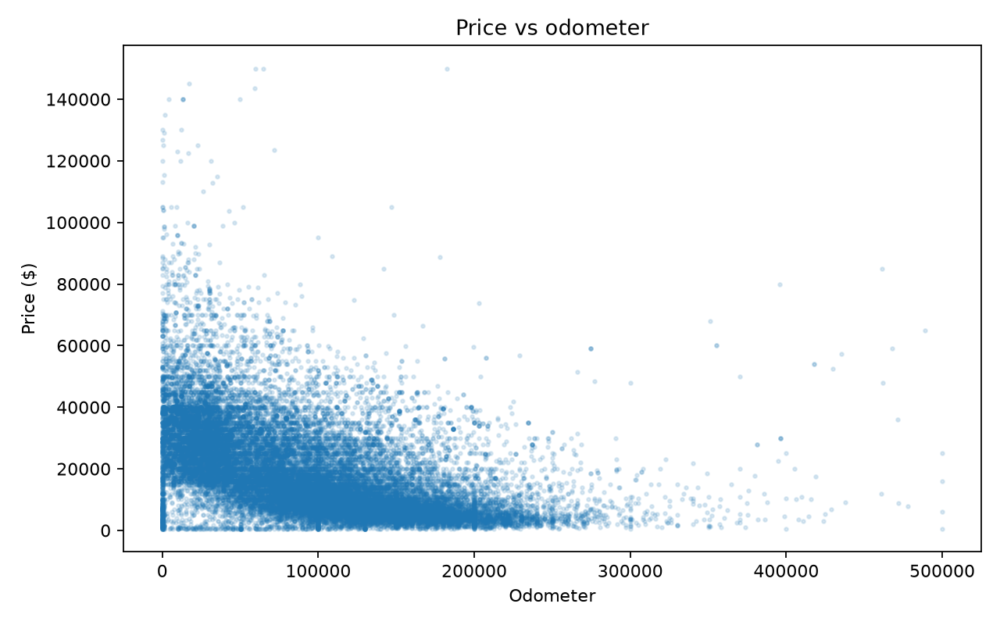
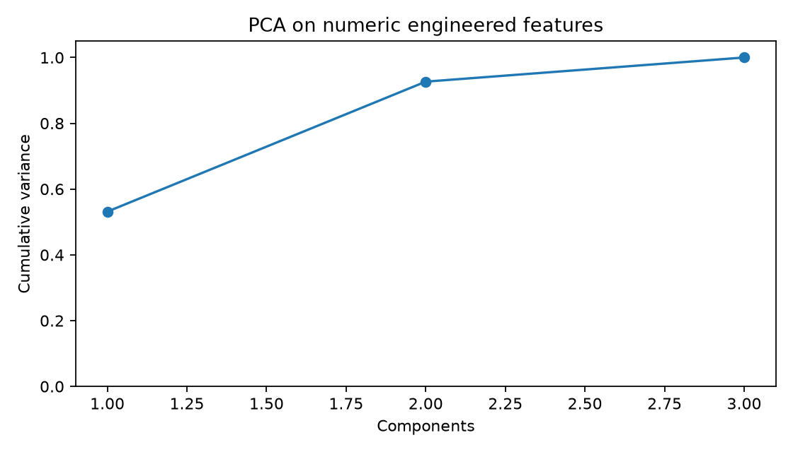
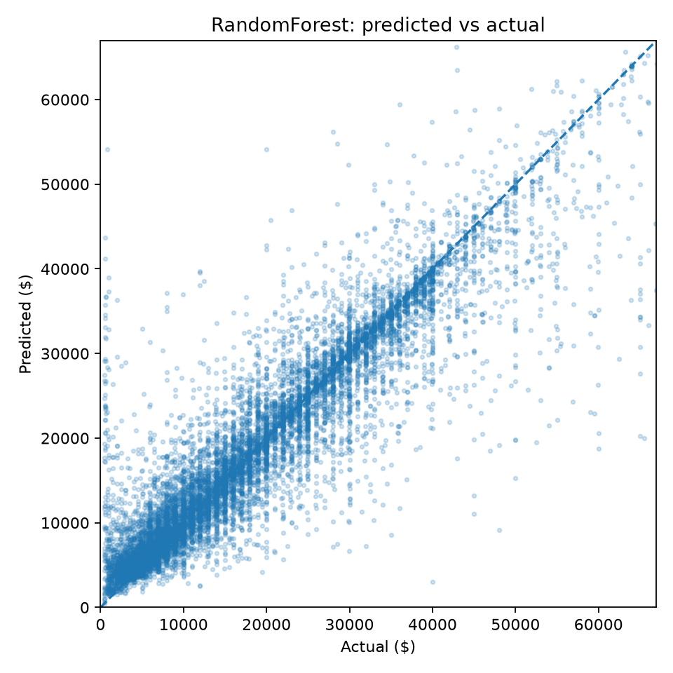
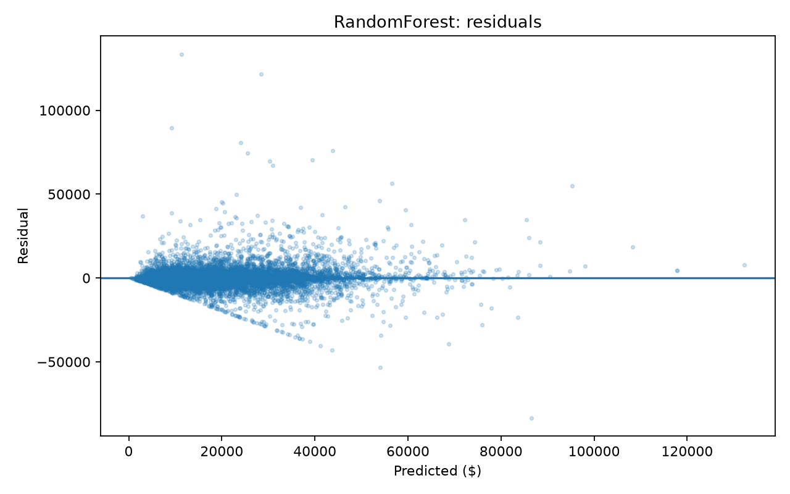
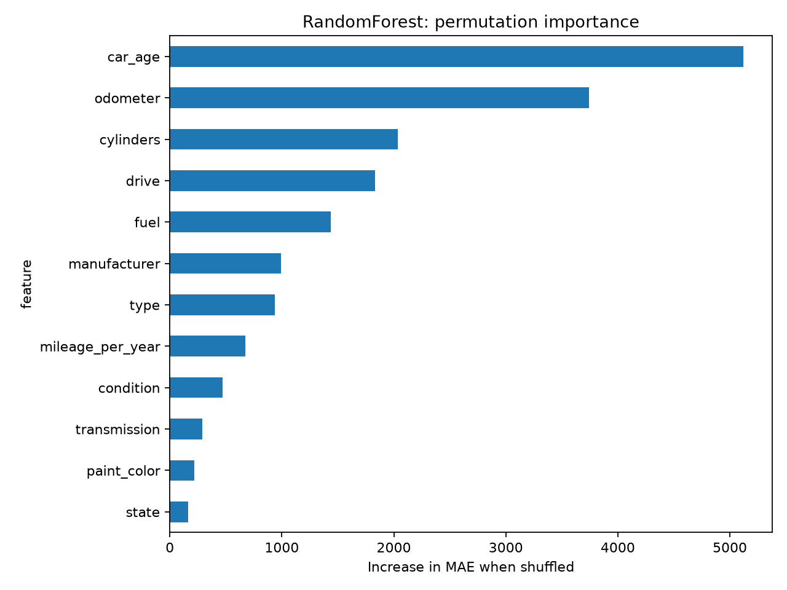
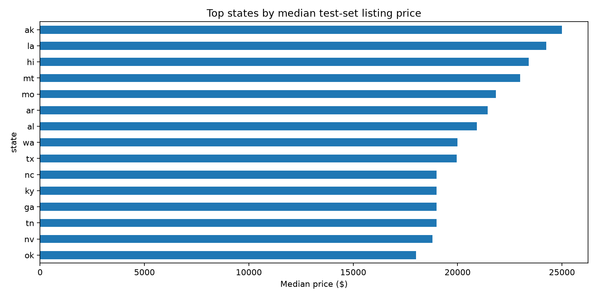

Project title: Used Car Price Prediction from Craigslist Listings
Course / section / semester: CSE437 Data Science — Section:06
Group members: - Sangeeta Sarker — ID: 22201164 — GSuite: sangeeta.sarker@g.bracu.ac.bd - Prapti Anabil Arnab — ID: 22299237 — GSuite: prapti.anabil.arnab@g.bracu.ac.bd - Naveed Shahrear — ID: 23201187 — GSuite: naveed.shahrear@g.bracu.ac.bd
GitHub repository: Paste final GitHub repository link here
Date: 03,september, 2026
This project predicts advertised used-car prices using Austin Reese’s
Craigslist Used Cars Dataset, which contains 426,880 listings and 26
variables. The target variable is price, a continuous
regression outcome in US dollars. The dataset contains extensive
missingness and implausible user-entered values, making it appropriate
for a real-world data-science workflow. After cleaning, 384,558 records
remained. A reproducible 120,000-row modeling sample was divided into
80% training, 10% validation, and 10% test data. A median-price
baseline, Ridge Regression, and Random Forest Regressor were compared
using Mean Absolute Error (MAE) as the primary metric. The tuned Random
Forest performed best on the held-out test set, achieving MAE =
$3,247.74, RMSE = $6,137.04, and R² =
0.8286. Permutation importance identified car
age, odometer mileage, and cylinder count as the strongest
predictors. Error analysis showed that predictions were least accurate
for luxury vehicles priced at $50,000 or more.
The task is supervised regression: predict the advertised price of a used vehicle from vehicle characteristics and listing location. Accurate price estimation is useful because asking prices vary substantially with depreciation, usage, manufacturer, mechanical configuration, condition, vehicle type, and local market characteristics.
Source: Austin Reese, Used Cars Dataset, Kaggle
https://www.kaggle.com/datasets/austinreese/craigslist-carstrucks-data
Collection method: Craigslist used-vehicle listings scraped across the United States.
Original size: 426,880 rows × 26 columns
File used: vehicles.csv
The raw dataset contains vehicle attributes, listing information, geographic fields, and free-text/identifier fields. It includes substantial missing data and implausible numeric values, so it is not a pre-cleaned benchmark dataset.
The target variable is price, measured in US dollars. It
is a continuous regression target. In the raw data, price is extremely
right-skewed: the median is $13,950, while values range
from $0 to approximately $3.74
billion. These extremes strongly indicate placeholder or
erroneous user-entered values.

Which features, especially age, mileage, and manufacturer/brand, drive used-car prices most strongly?
Do regional markets show different pricing patterns?
Where does the model fail most — luxury cars, very old cars, or high-mileage cars?
The original dataset contained 426,880 rows and 26 columns. The raw 26-column dataset had no completely identical rows. However, after selecting the 17 modeling variables, 39 duplicate records were identified and removed.
Missingness was substantial. Important examples include:
county: 100% missing
size: 71.77% missing
cylinders: 41.62% missing
condition: 40.79% missing
VIN: 37.73% missing
drive: 30.59% missing
paint_color: 30.50% missing
type: 21.75% missing
odometer: 1.03% missing
year: 0.28% missing

The raw numerical audit also showed clear data-quality problems. Odometer readings reached 10,000,000 miles, while price values reached approximately $3.74 billion.
For modeling, numerical features are median-imputed and categorical
variables are assigned a constant missing category. These
transformations are implemented inside scikit-learn pipelines so that
parameters are fitted using the training data only, preventing
information leakage from validation or test data.
Columns that were mostly irrelevant, highly incomplete, identifiers, URLs, free text, or otherwise unsuitable for the project scope were excluded rather than heavily imputed.
Listings with prices below $500 or above $150,000 were treated as implausible/extreme for the scope of this project and removed. This eliminated 42,283 rows.
Odometer values outside 0–500,000 miles were treated as invalid and converted to missing values rather than deleting the complete record. This affected 1,148 values.
Vehicle year was checked against a plausible range relative to the listing year. No year values required removal in the final run.
| Cleaning step | Result |
|---|---|
| Original rows | 426,880 |
| Duplicate modeling rows removed | 39 |
| Invalid/extreme price rows removed | 42,283 |
| Invalid odometer values set missing | 1,148 |
| Total rows removed | 42,322 |
| Final cleaned rows | 384,558 |
Approximately 90.09% of the original observations were retained.
Categorical strings were lowercased, trimmed, and whitespace-normalized.
Vehicle age was calculated relative to the Craigslist listing year:
car_age = posting_year - year
A second engineered variable was created:
mileage_per_year = odometer / (car_age + 1)
The +1 avoids division by zero for vehicles listed in
their model year.
Ridge Regression uses numerical median imputation, standard scaling, and one-hot encoding. Random Forest uses the same imputation and categorical encoding but does not require numerical scaling. Rare/unseen categories are handled using:
OneHotEncoder(handle_unknown='infrequent_if_exist', min_frequency=25)
| Stage | Rows | Columns | Median price | Odometer missing |
|---|---|---|---|---|
| Raw selected data | 426,880 | 17 | $13,950 | 1.03% |
| Cleaned data | 384,558 | 19 | $15,900 | 0.85% |
The increase from 17 to 19 columns reflects the addition of the
engineered variables car_age and
mileage_per_year.
The raw target distribution was highly skewed. Before cleaning, the price median was $13,950, Q1 was $5,900, and Q3 was $26,485.75. The raw mean was inflated to approximately $75,199 because of extreme values.
The raw odometer median was 85,548 miles, with Q1 = 37,704 and Q3 = 133,542.5. Extreme odometer entries reached 10,000,000 miles, supporting the need for validity rules.
Manufacturer-level median prices also varied substantially. Examples include Tesla ($37,990), Porsche ($29,950), RAM ($29,995), Ford ($17,000), Toyota ($13,995), Honda ($9,250), and Saturn ($4,235.50).
The exploratory plots show that both vehicle age and total mileage are strongly associated with listed price.


These relationships support using both depreciation-related and usage-related variables in the predictive model.
The price distribution is strongly skewed and contains unrealistic extremes.
Vehicle age and odometer mileage capture different aspects of depreciation and use.
Manufacturer and vehicle configuration are associated with substantial price differences.
Regional medians differ, but part of this variation may reflect differences in the types of vehicles listed in each state.
Identifier, URL, VIN, image, coordinate, and free-text fields were excluded to reduce leakage risk and unnecessary dimensionality.
Two derived variables were created:
****car_age*** — calculated from listing year minus
vehicle model year. This is more directly interpretable for depreciation
than raw model year.
****mileage_per_year*** — odometer divided by
(car_age + 1). This captures usage intensity relative to
vehicle age.
PCA was applied to the three standardized numerical engineered variables.
| Component | Explained variance | Cumulative variance |
|---|---|---|
| PC1 | 53.14% | 53.14% |
| PC2 | 39.52% | 92.66% |
| PC3 | 7.34% | 100.00% |
The first two principal components explained approximately 92.66% of the numerical variance.

PCA was demonstrated but not retained in the final predictive pipeline. Only three engineered numerical variables were available, while the categorical predictors were important. Retaining the original variables also preserved interpretability for feature importance and error analysis.
Feature selection combined domain screening with permutation-importance ranking from a compact Random Forest validation model.
|—:|—|—:|
Features with lower individual importance were still retained when they had plausible predictive value and added complementary categorical information.
The final predictors were:
car_age, odometer,
mileage_per_year, manufacturer,
condition, cylinders, fuel,
title_status, transmission,
drive, type, paint_color,
state, and region.
Raw year was replaced by car_age. IDs,
URLs, VIN, description, image URL, county, coordinates, and posting
timestamp were excluded from final modeling.
A reproducible modeling sample of 120,000 observations was used to keep training and tuning practical on a normal laptop.
|—|—:|—:|
Random seed 437 was used. Hyperparameter tuning was conducted using cross-validation on the training data. The held-out test set was evaluated only after model selection.
A DummyRegressor(strategy='median') was used as a
trivial baseline. Any useful learned model should substantially
outperform this predictor.
Ridge Regression represents a regularized linear model family. It provides a strong linear baseline after scaling numerical variables and one-hot encoding categorical variables.
Random Forest Regressor represents a nonlinear tree-ensemble family. It can capture interactions, thresholds, and nonlinear relationships without requiring a linear relationship between predictors and price.
Primary metric: Mean Absolute Error (MAE), measured in US dollars.
Secondary metrics:
Root Mean Squared Error (RMSE)
R²
Mean Absolute Percentage Error (MAPE)
MAE was selected as the primary metric before examining results because it is directly interpretable in dollars and is less dominated by extreme residuals than RMSE.
MAPE is reported only as a supplementary measure because percentage error becomes unstable for low-priced vehicles.
Ridge GridSearchCV
alpha = {0.1, 1, 10, 50, 100}
Random Forest RandomizedSearchCV
n_estimators = {80, 120, 180}
max_depth = {None, 12, 20, 30}
min_samples_split = {2, 5, 10}
min_samples_leaf = {1, 2, 4}
max_features = {1.0, sqrt, 0.5}
Ridge used exhaustive grid search. Random Forest used 10 randomized parameter combinations with 3-fold cross-validation and negative MAE scoring.
To keep tuning reproducible on student hardware, the hyperparameter-search sample was capped at 60,000 training observations. The selected configuration was subsequently refitted using the full modeling training split.
The best Ridge configuration was:
alpha = 50
The best Random Forest configuration was:
|—|—:|
Validation performance was:
|—|—:|—:|—:|—:|
The generated files results/ridge_search.csv and
results/rf_search.csv contain the complete search results
and allow the trend across candidates to be inspected rather than
reporting only the winner.
Final performance on the untouched test set was:
|—|—:|—:|—:|—:|
Random Forest was the strongest model. It reduced MAE by approximately 47.7% relative to Ridge Regression and approximately 71.2% relative to the median baseline.
Its R² of 0.8286 indicates that the model explains approximately 82.9% of the variation in used-car prices in the held-out test data.


Permutation importance of the final Random Forest model is shown below.

The three most important predictors were:
car_age — 5122.60
odometer — 3744.18
cylinders — 2036.19
Other important variables included drive,
fuel, manufacturer, type, and
mileage_per_year.
Model errors were analyzed for the prespecified groups in the proposal.
| Segment | n | MAE |
|---|---|---|
| Luxury cars, actual price ≥ $50,000 | 408 | $12,764.41 |
| Very old cars, age ≥ 25 years | 549 | $6,740.80 |
| High-mileage cars, odometer ≥ 150,000 | 2,263 | $2,280.83 |
| Other vehicles | 8,823 | $2,942.28 |
The model clearly struggled most with luxury vehicles. Their MAE was almost four times the overall Random Forest MAE. Very old vehicles were the second-most difficult group.
High-mileage vehicles were not the main failure case; their MAE was
actually lower than the general other segment.
Possible reasons for poorer luxury-vehicle performance include smaller sample size, greater variation in trim and equipment, rarity, collector value, and other characteristics not fully represented in the available Craigslist variables. These explanations are plausible interpretations rather than causal conclusions.
The 20 largest individual prediction errors are saved in
results/worst_predictions.csv for concrete failure-case
inspection.
Question 1: Which features drive used-car prices most strongly?
Vehicle age was the most important predictor, followed by odometer mileage and cylinder count. Drivetrain and fuel type also contributed substantially. Manufacturer was important but ranked below several vehicle-use and mechanical characteristics in the final Random Forest.
Question 2: Do regional markets show different pricing patterns?
Yes, descriptively. Among states with at least 50 test listings, the spread between the highest and lowest state-level median prices was approximately $14,449.

However, state and region had relatively
low permutation importance compared with vehicle age, mileage, and
mechanical characteristics. Therefore, geographic price differences
should not be interpreted as purely causal regional effects; they may
partly reflect differences in the types of vehicles listed in each
market.
Question 3: Where does the model fail most?
The largest errors occurred for luxury cars priced at $50,000 or more, with MAE = $12,764.41. Very old cars were the second-most difficult segment, with MAE = $6,740.80. High-mileage cars were predicted comparatively well, with MAE = $2,280.83.
Craigslist prices are asking prices rather than completed-sale prices. Listings may contain user-entry mistakes, reposts, missing characteristics, and unobserved differences in vehicle trim, mechanical condition, optional equipment, accident history, or seller behavior.
The regional analysis is descriptive and does not establish causal effects of location.
A 120,000-row reproducible modeling sample was used instead of fitting every model on all 384,558 cleaned observations. This improves computational practicality but sacrifices some available information.
MAPE is high because it is sensitive to low-priced vehicles and should therefore not be interpreted as the primary performance measure.
Future work could investigate gradient-boosting methods, time-aware validation, geospatial features, richer model/trim information, and carefully processed text from listing descriptions.
| Member | Student ID | Contribution |
|---|---|---|
| Naveed Shahrear | 23201187 | Data preprocessing, evaluation, and error analysis |
| Sangeeta Sarker | 22201164 | Feature engineering and PCA |
| Prapti Anabil Arnab | 22299237 | Model development and hyperparameter tuning |
Reese, A. Used Cars Dataset. Kaggle. https://www.kaggle.com/datasets/austinreese/craigslist-carstrucks-data
scikit-learn documentation. https://scikit-learn.org/
pandas documentation. https://pandas.pydata.org/
NumPy documentation. https://numpy.org/
Matplotlib documentation. https://matplotlib.org/